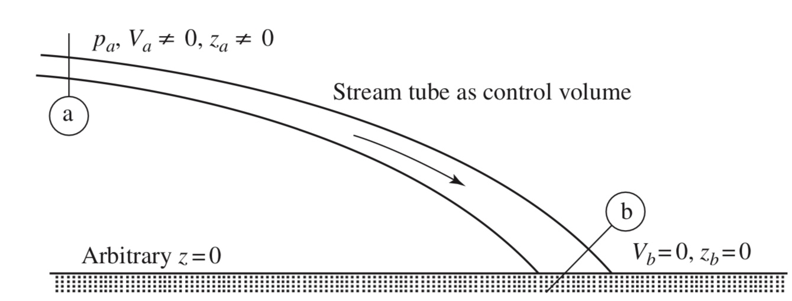
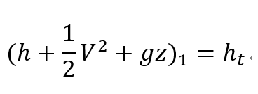
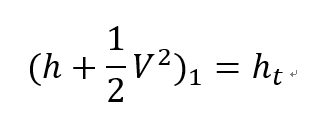
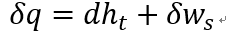
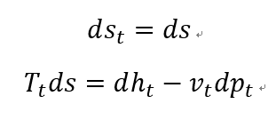
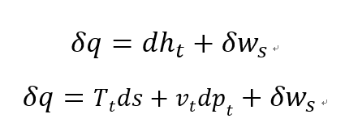
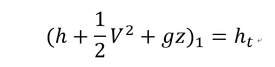
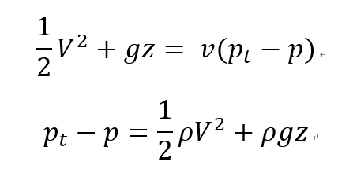

[Gas Dynamics] Ch 3 Control volume analysis - Stagnation concept
Gas dynamics 에서 가장많이 쓰이고 꼭 알아야 하는 개념,
Stagnation property
어떤 정의? 왜 정의?
Static properties -
그냥 우리가 실제로 관찰하는 fluid property임. 나는 정지해서 관측하고 유체는 움직이고
Stagnation property -
우리가 재려고 하는 fluid 를 나와 같은 potential 그리고 Velocity 로 바꾸었을때 fluid property
보통 관찰자는 정지해있고 Potential =0 인 곳에 있는다.
그니까 Stagnation property 는 속도가 0이고 z=0인 관찰자의 reference에서의 property이다.
그러면 왜 도대체 왜 이런 새로운 개념을 또 만든걸까?
분명히 이유가 있으니까 Stagnation 이라는 개념을 만든 것이다.
Stagnation이 같고, Static이 다른 경우 우리는 서로 다른 Static을 구할 수 있기 때문이다.
솔직히 감이 안올 것같다. 밑에서 그림을 통해서 이해해보자.
Static 과 Stagnation의 관계를 먼저 살펴보자.

여기서, 핵심은
모든 Static property들은 각자, Stagnation property를 가지고 있다.
Static 에서 Stagnation proerty로 바꾸어주는 과정은 Isentropic과정이라는 것이,
Stagnation property의 정의라는 것 아주 중요하다.
Isentropic process
No Energy exchange(Q=W=0), No energy loss 즉 Entropy change = 0
결론적으로 adiabatic + no Entropy change -> Isentropic Process
그니까, "Stagnation is a point from Static point through
Isentropic + no shaft work process"
"Stagnation point is a reference where the velocity and potential is
exactly same with a viewer"
Static - > Stagnation Enthalpy Relationship
이제 위 그림에서 Stagnation - static realtionsihp 관계식들을 총 정리해보자
Steady state, 1-D Energy equation 부터 살펴보자
1 -> Static, 2-> Stagnation state
![[Gas Dynamics] Ch 3 Control volume analysis - Stagnation concept](./images/img-002.png)
나중속도, potential,heat transfer, shaft work 모두 0 이므로

우항은 Enthalpy 만 남는다. 그리고 Stagnation enthalpy ht 라고 정의한다.
만약 potential 차이가 없다면

가장 많이 쓰이는 식 정말 많이 쓰인다.
Stagnation -static enthalpy relationship from steady state, 1-D, Energy Equation
이제 State1-> State2 로 가는 일반적인 process를 살펴보자
Steady state - 1-D energy equation
![[Gas Dynamics] Ch 3 Control volume analysis - Stagnation concept](./images/img-005.png)
여기서 State1과 State2각각 Stagnation point 가 있을 것이다.
왜냐하면 각각 static point이기 때문이다.
Therefore,
![[Gas Dynamics] Ch 3 Control volume analysis - Stagnation concept](./images/img-006.png)
Differential form 으로 나타내면

이 식이 의미하는게 뭘까? 일단 이 식은 Steady-state, 1-D, 가정이 함축되어 있다.
여기서 Adiabatic(dq=0) , no shaft work(ws=0) assumption 까지 추가된다면
dht =0 즉 state 1 과 state2 의 stagnation Enthalpy 가 일정한 것이다.
핵심적인 것은 위의 가정에 No friction 이라는 말은 없다.
따라서 Entropy가 일정한 process가 아니어도
위의 식은 성립할 수 있다는 의미
CH10 Rayleigh flow 이전까지는
모두 Steady state,1-D,Adaibatic 가정을 하고 flow흐름을 분석하기 때문에
Stagnation enthalpy 는 일정하다 라는 뇌세포가 머리에 있어야한다.
한박자 더가보자
지금부터 State를 편의상
밑에 정의한 숫자로 표현 할 것이다.
State 1: 1
State2: 2
Stagnation state of State 1 : 1t
Stagnation state of State 2: 2t
라 정의해보자.
이제, 1t -> 2t process
즉, Stagnation에서 다른 stagnation으로 가는 과정을 살펴볼 것이다.
![[Gas Dynamics] Ch 3 Control volume analysis - Stagnation concept](./images/img-008.png)
근데 Static-> Stagnation process자체의 정의가 Isentropic 이었으므로
State 1의 entropy = Stagnation 1t의 entropy
State 2의 entropy = Stagnation 2t의 entropy
위 두식을 빼주면,
ds (State 1->2) = ds (stagnation 1t -> 2t)

여기서 dht 는 익숙한 표현이다.
아까전에 유도한 energy equation 과 연립

그리고 전에 다뤘던 Entropy 식들을 이제 대입해보자.
![[Gas Dynamics] Ch 3 Control volume analysis - Stagnation concept](./images/img-011.png)
여기서 이전 포스터부터, 까먹지 말아야할 부분이 Control volume에 유입된 열,
Energy equation에 사용된 열은 Reversible process라는 것이다.
따라서, dq = Tds_e
![[Gas Dynamics] Ch 3 Control volume analysis - Stagnation concept](./images/img-012.png)
마지막 식이 바로 Stagnation pressure-energy equatoin
마지막으로 Incompressible flow 의 Stagnation pressure 에 대해서 탐구해보자
dv=0 이므로 as incompressible flow
Tds = du + pdv = du
그렇다면 Static(u) -> Stagnation process(u_t) 에서
Isentropic (ds = 0)이므로 du = 0
따라서,
u=u_t
이제 엔탈피의 미분항으로부터 식을 전개하보면
![[Gas Dynamics] Ch 3 Control volume analysis - Stagnation concept](./images/img-013.png)
여기서 stagnation enthaply 는 다음과 같이 정의되었다.

이제 이식을 위에 대입해주면 최종 Stagnation pressure 이 derived

[Stagnation pressure on incompressible flow]